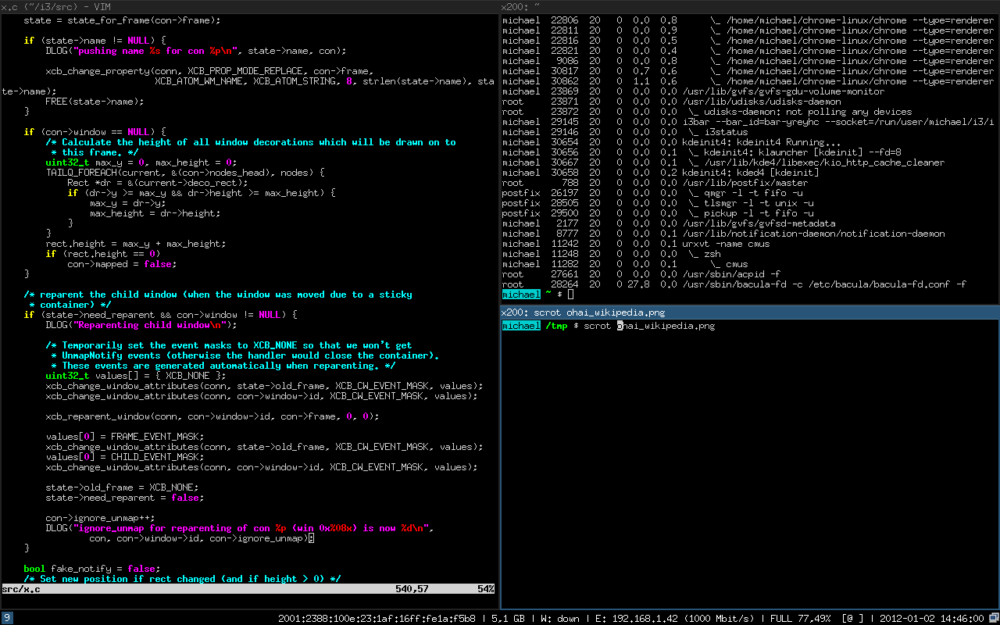

The Linux Window Manager
Conversations around window managers can be a little contentious...but for some of us, it makes very little difference. I'm one of those humans. As much as I adore nerding out around some ultra-minimal window manager that requires you change settings by compiling its c code, at the end of the day I gain little benefit from any specific approach.
That said, I do love and prefer Linux. The fact that we're afforded these choices around window managers is what draws many of us in initially. Your computer, whether running Ubuntu or Arch, can flip a switch to run a very capable, heavy-weight manager such as KDE or a manager with a binary size of ~1mb, such as dwm. Before diving too deep into my day-to-day workflow, let's set some primer around window managers.
Window Managers
Window managers come in two, primary, varieties. These include stacked and tiled. Tiled are commonly composed of several "workspaces", which can be switched through and host one or many windows, tiled side-by-side. They (typically, by default) do not allow windows to stack or overlap. The following screenshot, from Wikipedia, demonstrates this for i3.

Stacked window managers, on the other hand, are what we conventionally think of. Especially those of us that have a history with OSX (mac) or Windows. These window managers give us floating windows that can overlap and be moved into any format on our screens. The following screenshot, from Wikipedia, demonstrates this for xfce.

From my experience, many have associated the move to tiling managers as a more hardcore approach to interacting with Linux. Or at least one we associate with focus, minimalism, and/or getting things done. Over the years, some using i3 and others using dwm, I have found my productivity remain relatively static. I did have some super cool layouts that I loved looking at. However, I am a habitual over-optimizer. This trait sends me down constant rabbit holes of thinking through what workspace I should assign to which tasks, how I should be setting up a tiling layout for optimal focus, and many more considerations. Eventually I realized this constant customization was causing me more loss in focus than the gain I'd hoped to have leaving stacked managers behind.
In short, this was a me problem, not a tiling window manager problem. Knowing myself better now, I have switched back to stacked managers, with optimizations and automation focused around my key priorities.
Priorities
My priorities around workflow are fairly straight forward. Given I have the attention span of a small squirrel, my key priorities are:
- Switch between key applications quickly
- Switch between key applications with minimal context-switching
So switching between applications, this isn't too hard in any window manager, is it? Sure, it is not. However minimizing the thought required to jump from a to b is huge for my work. For example, at the most intense end of the spectrum, clicking around and moving windows to find firefox is less than ideal. Even using flows like alt+tab or a launcher requires me to think about where the thing is or how to find/focus it. Additionally, the applications I care about and need to switch between are fairly minimal in quantity. There are maybe 7 total with 4 key ones I constantly toggle. These are:
- Web Browser (firefox)
- Terminal (st)
- IDE (intellij)
- File browser (nemo)
For me, the question is, with a key or two, can I bring up the application I need to get the task done no matter where it preexisted. Additionally, if the app isn't running, can I transparently launch it without being concerned about another shortcut or workflow?
Summary
In short, over years of using many different window managers with different philosophies, I've found that the idea of easily triggering the app I need to get to is the real value add for any desktop experience. This is true for me and, at a minimum, hopefully this provided interesting perspective for your future Linux endeavors!